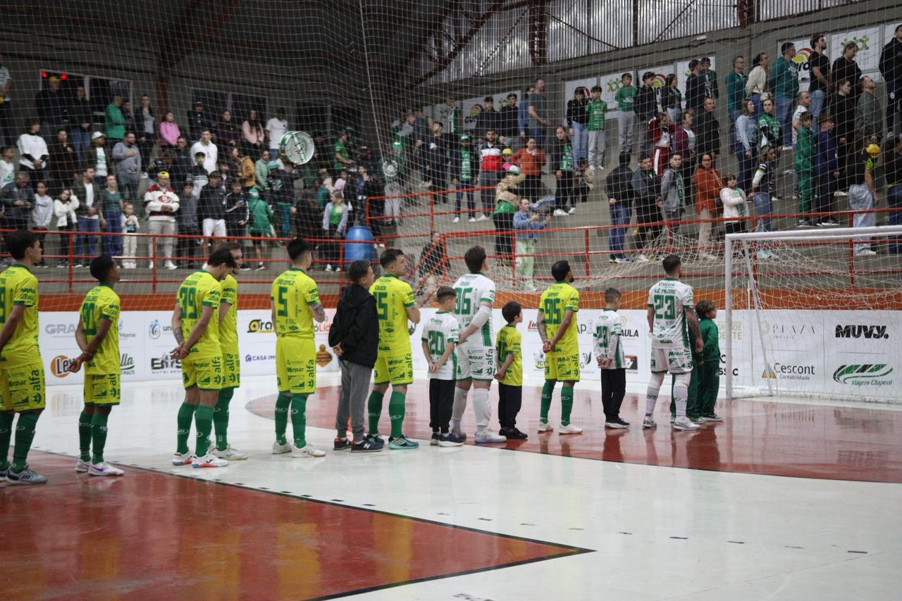

A Prefeitura de Chapecó/Chapecoense/Unochapecó acabou superada pelo São Lourenço na noite desta sexta-feira (5), no Ginásio Plínio Arlindo De Nes (SER Aurora), em Chapecó. O Verdão das Quadras perdeu por 5 a 2, em jogo da sexta rodada da Série Ouro da Federação Catarinense. Um grande público esteve presente nas arquibancadas.
Chapecoense e São Lourenço fizeram um primeiro tempo digno de times que estão na parte de cima da classificação. Muita movimentação, disputa pela bola e chances de gol para os dois lados. Os visitantes aproveitaram as oportunidades e foram para o intervalo em vantagem: 2 a 0. Gabriel abriu o placar aos 6'08", enquanto Vico ampliou a vantagem aos 16'11".

A partida continuou equilibrada e atrativa na segunda etapa. Aos 4'56", Fael balançou a rede e diminuiu a diferença. Os donos da casa insistiram no ataque, mas foram surpreendidos com o terceiro da equipe alviazul, marcado por Vico aos 11'37". Os lourencianos aumentaram aos 13'05", com o goleiro Serjão. O quinto veio aos 14'03", mais uma vez com Vico. Maranhão descontou a três segundos do fim.
Com o resultado, a Chape Futsal permanece com 10 pontos e fecha a rodada em terceiro lugar. O próximo compromisso será no dia 14 de junho, um domingo, às 16h, contra a Xaxiense/Arvoredo, pela Copa Santa Catarina, no Centro Integrado de Cultura e Lazer de Arvoredo.
Crédito das fotos: @rogersilva_fotografia/@achapefutsal